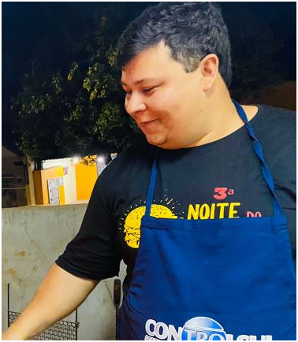

História do projeto
Origem fraterna
o primeiro evento nasceu para ajudar diretamente um irmão em tratamento
Legado preservado
a memória dos homenageados segue viva no propósito do projeto
Evento anual
a ação se consolidou como compromisso fixo da Loja Maçônica Arte & Ciência
Origem da Noite do Burger Solidário
Memória, fraternidade e continuidade
Uma noite que nasceu da união para ajudar.
A Noite do Burger Solidário surgiu do desejo de apoiar o irmão Giuseppe Prato, em um momento de necessidade real. O que começou como um gesto fraterno se transformou em um projeto anual de solidariedade.
A história do evento também carrega a memória de pessoas que marcaram profundamente essa trajetória, como Giuseppe Prato e Edno Gentilho Junior, cuja presença e contribuição permanecem vivas no espírito da iniciativa.
Memória do projeto

Solidariedade que permanece
A história da Noite do Burger Solidário é feita de ajuda concreta, presença humana e compromisso contínuo com a comunidade.
Como tudo começou
O projeto nasceu da vontade de estar presente quando a ajuda era necessária.
A Noite do Burger Solidário nasceu do desejo de ajudar o irmão Giuseppe Prato, que precisava de uma cirurgia na coluna e havia sido diagnosticado com câncer. Em um espírito de fraternidade, todos os irmãos se uniram, e assim foi criado o primeiro Burger Solidário.
No ano seguinte, quando Giuseppe enfrentou um novo câncer, o evento foi novamente dedicado a ele. Com o apoio da Loja Prosperidade, aconteceu o segundo Burger Solidário, já com maior organização e planejamento.
No terceiro ano, enquanto Giuseppe continuava sua batalha contra a doença, foi realizado o terceiro Burger Solidário. Infelizmente, Giuseppe nos deixou um dia após o evento, e a perda foi ainda maior com o falecimento do irmão Edno Gentilho Junior, que tanto contribuiu para os eventos anteriores.
Diante desses acontecimentos, a Noite do Burger Solidário foi transformada em um evento anual da Loja Maçônica Arte & Ciência, mantendo vivo o legado de solidariedade e honra à memória dos irmãos homenageados.
Giuseppe Prato
Edno Gentilho Junior
Continuidade
Da origem à consolidação do evento.
Com o passar dos anos, o Burger Solidário deixou de ser apenas uma ação pontual e passou a representar um compromisso recorrente com causas relevantes, com cada edição ampliando alcance, visibilidade e impacto social.
Páginas relacionadas